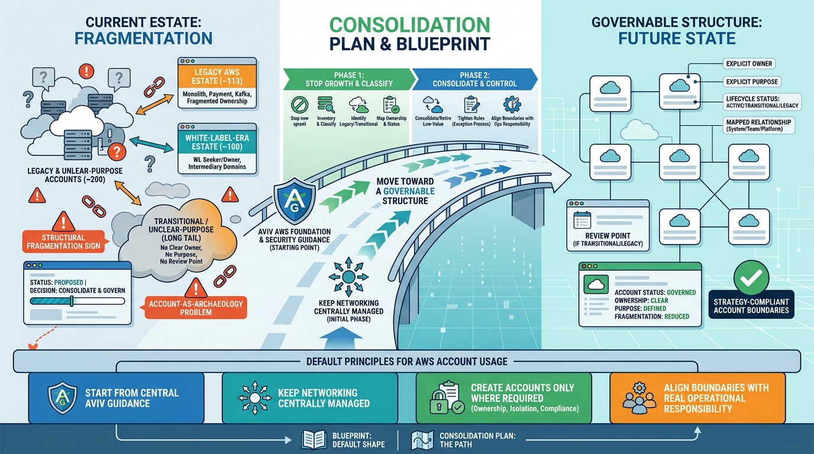

Blueprints and Convergence Plans
AWS Account Blueprint and Consolidation Plan: From ~200 Accounts to a Governable Estate

Image generated by Google Gemini (gemini-3-pro-image-preview)
Blueprints and Convergence Plans

Image generated by Google Gemini (gemini-3-pro-image-preview)